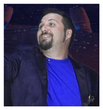
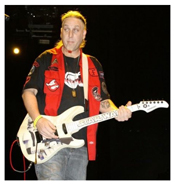
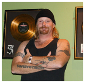

Sci-Fried was born out of the love of music and all things nerdy. Sci-Fried takes pop culture and all the nerdy things you love and uses that as the lyrical themes while employing rock music of all styles. They combine the two into an awesome sonic experience for their fans . Sci-Fried's stage show is accompanied by video to fully immerse the audience into the world of Nerd Music and Sci-Fried.
Sci-Fried has released five albums and one DVD since their launch in 2008. Ramming Speed is an all parody CD based on a wide variety of popular classic and modern rock songs. Geeks Unite was the band's first release of all original rock music infused with science fiction, fantasy, gaming and all things geek as lyrical themes. Their third album, Future Tense, explores the past and future state of Science Fiction in a variety of musical styles that demonstrates the band's growth and continuing diversity musically and lyrically. In 2012 Sci-Fried released Co-Op Mode. An all collaboration album with some of the hottest names in Nerd Music. MC Lars, Warp 11 and Kirby Krackle are just a few on Co-Op Mode that Sci-Fried was able to work with. The Sci-Fried Music Video Collective vol. 1 DVD contains over 11 Music Videos and over 90 minutes of total video. Then in 2014 Sci-Fried released their 5th album Season V. Season V is Sci-Fried's best work to date and shows the growth of the band and the Nerd Music Genre to the mainstream.
Sci-Fried has shared the stage with MegaRan, Nerf Herder, MC Frontalot, Less Than Jake, The Protomen, Gargamel, Kirby Krackle, Schaffer The Darklord, Marc With a C, Random Encounter, Scrub Club Members, Adam WarRock, MC Lars, The One Ups, They Might Be Giants (Nerdapalooza 2013), Jason Hayes and Critical Hit (Blizzard) Nobuo Uematsu (Final Fantasy), Vivid (J-Rock) and many others. Their mission is to continue to play at conventions, Festivals and clubs. In 2012 Sci-Fried played twice at the Hard Rock Live at Orlando Universal City Walk. Showing that Geek and Nerd themed music is on the mainstream rise.
Sci-Fried has earned many video awards, including Creation's Las Vegas based Official Star Trek Convention for several years running, Creation's Vancouver based Official Stargate Convention and First and Second Place in different categories for the Dragoncon Fan Music Video contest for 2012. Sci-Fried has also won Battlecon Battle of the Bands, was voted Best Metal Band in the Orlando Weekly magazine for 2011, 2012 & 2013.
The band sponsored a breakout tour in 2010 playing at nightclubs, festivals and sci-fi themed conventions throughout the southeast. They won the Battlecon Battle of the Bands competing with groups of all styles. The tour was well received and the band's fan base increased exponentially. Between live shows, Sci-Fried is reaching out to other artists within the genre to work together in a co-op concept designed to bring nerd core and geek rock to the forefront of fandom and the mainstream.
For 2016 Sci-Fried will continue to grow by doing more live shows/touring and working on Music Vides and new original music and parodies.
Let out your inner Nerd with Sci-Fried! - Geeks Unite!
Meet The Band
Captain Dan - Dan Dolan - Vocals / Guitar / Keyboard
Captain Dan is a seasoned performed and brings equal parts guitar and vocals. Also a seasoned rapper and keyboard player! Dan is ready to help Sci-Fried hit Warp speed!
Chuckcon - Charles Silver - Guitar
Chuck is not only the founder, but is the heart and soul of Sci-Fried. Known for playing his Star Wars Guitars live has become his trademark. Chuck continues to explore new ideas and directions for Sci-Fried to go in. Chuck is also the producer for all Sci-Fried albums and Music Videos.
Dammit Jim - William Frederick - Percussion/Keyboard
Jim is the musical Quarterback of the band. He handles the task of keeping all the styles the band employs with the precision of quartz. Jim also does all the keyboard samples on all Sci-Fried albums. Currently a contractor for NASA!
Sunshine - Sunni Simmons - Bass
Sunni holds down the bass groove with ferocity and skill! A graduate of the Atlanta School of Music he brings quality and precision to the band.